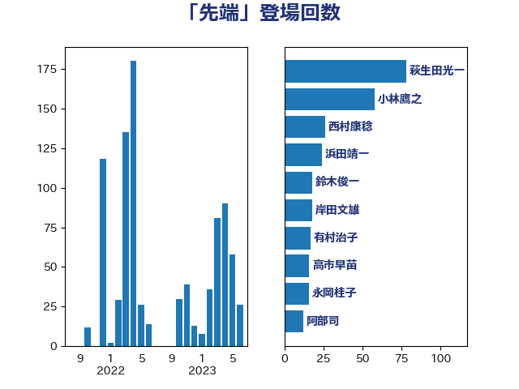

単語「先端」

| 萩生田光一 | 自由民主党 | 78 回 |
| 小林鷹之 | 自由民主党 | 58 回 |
| 西村康稔 | 自由民主党 | 26 回 |
| 浜田靖一 | 自由民主党 | 24 回 |
| 鈴木俊一 | 自由民主党 | 18 回 |
| 岸田文雄 | 自由民主党 | 18 回 |
| 有村治子 | 自由民主党 | 17 回 |
| 高市早苗 | 自由民主党 | 16 回 |
| 永岡桂子 | 自由民主党 | 16 回 |
| 阿部司 | 日本維新の会 | 12 回 |
| 柴田巧 | 日本維新の会 | 12 回 |
| 熊谷裕人 | 立憲民主党 | 11 回 |
| 小野泰輔 | 日本維新の会 | 11 回 |
| 高木かおり | 日本維新の会 | 9 回 |
| 石井正弘 | 自由民主党 | 7 回 |
| 田島麻衣子 | 立憲民主党 | 6 回 |
| 沢田良 | 日本維新の会 | 6 回 |
| 森山浩行 | 立憲民主党 | 6 回 |
| 後藤茂之 | 自由民主党 | 6 回 |
| 塩川鉄也 | 日本共産党 | 6 回 |
| 高橋克法 | 自由民主党 | 5 回 |
| 青山繁晴 | 自由民主党 | 5 回 |
| 鈴木義弘 | 国民民主党 | 5 回 |
| 浅川義治 | 日本維新の会 | 5 回 |
| 水野素子 | 立憲民主党 | 5 回 |
| 末松信介 | 自由民主党 | 5 回 |
| 小山展弘 | 立憲民主党 | 5 回 |
| 宮内秀樹 | 自由民主党 | 5 回 |
| 羽田次郎 | 立憲民主党 | 4 回 |
| 片山さつき | 自由民主党 | 4 回 |
| 平林晃 | 公明党 | 4 回 |
| 山谷えり子 | 自由民主党 | 4 回 |
| 土田慎 | 自由民主党 | 4 回 |
| 青木愛 | 立憲民主党 | 3 回 |
| 野村哲郎 | 自由民主党 | 3 回 |
| 細田博之 | 自由民主党 | 3 回 |
| 篠原豪 | 立憲民主党 | 3 回 |
| 石川大我 | 立憲民主党 | 3 回 |
| 武部新 | 自由民主党 | 3 回 |
| 松沢成文 | 日本維新の会 | 3 回 |
| 平木大作 | 公明党 | 3 回 |
| 岡田直樹 | 自由民主党 | 3 回 |
| 宮本周司 | 自由民主党 | 3 回 |
| 八木哲也 | 自由民主党 | 3 回 |
| 伊藤俊輔 | 立憲民主党 | 3 回 |
| 井野俊郎 | 自由民主党 | 3 回 |
| 井上貴博 | 自由民主党 | 3 回 |
| 青山周平 | 自由民主党 | 2 回 |
| 近藤和也 | 立憲民主党 | 2 回 |
| 西銘恒三郎 | 自由民主党 | 2 回 |
| 衛藤晟一 | 自由民主党 | 2 回 |
| 秋野公造 | 公明党 | 2 回 |
| 福島みずほ | 社会民主党 | 2 回 |
| 神谷裕 | 立憲民主党 | 2 回 |
| 礒崎哲史 | 国民民主党 | 2 回 |
| 石田昌宏 | 自由民主党 | 2 回 |
| 石垣のりこ | 立憲民主党 | 2 回 |
| 石井苗子 | 日本維新の会 | 2 回 |
| 田村智子 | 日本共産党 | 2 回 |
| 玉木雄一郎 | 国民民主党 | 2 回 |
| 漆間譲司 | 日本維新の会 | 2 回 |
| 渡辺周 | 立憲民主党 | 2 回 |
| 渡辺博道 | 自由民主党 | 2 回 |
| 浅野哲 | 国民民主党 | 2 回 |
| 松本剛明 | 自由民主党 | 2 回 |
| 本庄知史 | 立憲民主党 | 2 回 |
| 早坂敦 | 日本維新の会 | 2 回 |
| 新妻秀規 | 公明党 | 2 回 |
| 工藤彰三 | 自由民主党 | 2 回 |
| 山口晋 | 自由民主党 | 2 回 |
| 山下芳生 | 日本共産党 | 2 回 |
| 宮本岳志 | 日本共産党 | 2 回 |
| 安江伸夫 | 公明党 | 2 回 |
| 太田房江 | 自由民主党 | 2 回 |
| 大西健介 | 立憲民主党 | 2 回 |
| 大塚耕平 | 国民民主党 | 2 回 |
| 堀井巌 | 自由民主党 | 2 回 |
| 城井崇 | 立憲民主党 | 2 回 |
| 古賀友一郎 | 自由民主党 | 2 回 |
| 中山展宏 | 自由民主党 | 2 回 |
| 上杉謙太郎 | 自由民主党 | 2 回 |
| こやり隆史 | 自由民主党 | 2 回 |
| 齋藤健 | 自由民主党 | 1 回 |
| 高見康裕 | 自由民主党 | 1 回 |
| 高橋はるみ | 自由民主党 | 1 回 |
| 高木啓 | 自由民主党 | 1 回 |
| 阿部弘樹 | 日本維新の会 | 1 回 |
| 阿達雅志 | 自由民主党 | 1 回 |
| 金子道仁 | 日本維新の会 | 1 回 |
| 金子恵美 | 立憲民主党 | 1 回 |
| 金子恭之 | 自由民主党 | 1 回 |
| 野中厚 | 自由民主党 | 1 回 |
| 重徳和彦 | 立憲民主党 | 1 回 |
| 里見隆治 | 公明党 | 1 回 |
| 赤池誠章 | 自由民主党 | 1 回 |
| 赤嶺政賢 | 日本共産党 | 1 回 |
| 豊田俊郎 | 自由民主党 | 1 回 |
| 谷公一 | 自由民主党 | 1 回 |
| 西野太亮 | 自由民主党 | 1 回 |
| 西岡秀子 | 国民民主党 | 1 回 |
| 藤巻健太 | 日本維新の会 | 1 回 |
| 荒井優 | 立憲民主党 | 1 回 |
| 茂木敏充 | 自由民主党 | 1 回 |
| 若宮健嗣 | 自由民主党 | 1 回 |
| 舩後靖彦 | れいわ新選組 | 1 回 |
| 舟山康江 | 国民民主党 | 1 回 |
| 紙智子 | 日本共産党 | 1 回 |
| 篠原孝 | 立憲民主党 | 1 回 |
| 竹谷とし子 | 公明党 | 1 回 |
| 穀田恵二 | 日本共産党 | 1 回 |
| 稲津久 | 公明党 | 1 回 |
| 神津たけし | 立憲民主党 | 1 回 |
| 磯崎仁彦 | 自由民主党 | 1 回 |
| 石原正敬 | 自由民主党 | 1 回 |
| 石原宏高 | 自由民主党 | 1 回 |
| 石井拓 | 自由民主党 | 1 回 |
| 甘利明 | 自由民主党 | 1 回 |
| 猪瀬直樹 | 日本維新の会 | 1 回 |
| 清水貴之 | 日本維新の会 | 1 回 |
| 泉健太 | 立憲民主党 | 1 回 |
| 横沢高徳 | 立憲民主党 | 1 回 |
| 梅谷守 | 立憲民主党 | 1 回 |
| 根本幸典 | 自由民主党 | 1 回 |
| 林芳正 | 自由民主党 | 1 回 |
| 松野博一 | 自由民主党 | 1 回 |
| 松山政司 | 自由民主党 | 1 回 |
| 杉尾秀哉 | 立憲民主党 | 1 回 |
| 末次精一 | 立憲民主党 | 1 回 |
| 星野剛士 | 自由民主党 | 1 回 |
| 日下正喜 | 公明党 | 1 回 |
| 庄子賢一 | 公明党 | 1 回 |
| 平将明 | 自由民主党 | 1 回 |
| 島尻安伊子 | 自由民主党 | 1 回 |
| 岸真紀子 | 立憲民主党 | 1 回 |
| 岬麻紀 | 日本維新の会 | 1 回 |
| 岩渕友 | 日本共産党 | 1 回 |
| 岡本あき子 | 立憲民主党 | 1 回 |
| 山際大志郎 | 自由民主党 | 1 回 |
| 山崎正恭 | 公明党 | 1 回 |
| 山岸一生 | 立憲民主党 | 1 回 |
| 山岡達丸 | 立憲民主党 | 1 回 |
| 尾辻秀久 | 無所属 | 1 回 |
| 小沢雅仁 | 立憲民主党 | 1 回 |
| 宮口治子 | 立憲民主党 | 1 回 |
| 奥下剛光 | 日本維新の会 | 1 回 |
| 大野泰正 | 自由民主党 | 1 回 |
| 大野敬太郎 | 自由民主党 | 1 回 |
| 塩田博昭 | 公明党 | 1 回 |
| 堤かなめ | 立憲民主党 | 1 回 |
| 堂故茂 | 自由民主党 | 1 回 |
| 堀場幸子 | 日本維新の会 | 1 回 |
| 國重徹 | 公明党 | 1 回 |
| 和田義明 | 自由民主党 | 1 回 |
| 和田有一朗 | 日本維新の会 | 1 回 |
| 吉川赳 | 無所属 | 1 回 |
| 古屋範子 | 公明党 | 1 回 |
| 勝部賢志 | 立憲民主党 | 1 回 |
| 務台俊介 | 自由民主党 | 1 回 |
| 加藤勝信 | 自由民主党 | 1 回 |
| 前原誠司 | 国民民主党 | 1 回 |
| 佐藤英道 | 公明党 | 1 回 |
| 仁木博文 | 無所属 | 1 回 |
| 井出庸生 | 自由民主党 | 1 回 |
| 井上信治 | 自由民主党 | 1 回 |
| 串田誠一 | 日本維新の会 | 1 回 |
| 中野洋昌 | 公明党 | 1 回 |
| 中村裕之 | 自由民主党 | 1 回 |
| 中川康洋 | 公明党 | 1 回 |
| 中司宏 | 日本維新の会 | 1 回 |
| 上野通子 | 自由民主党 | 1 回 |
| 三浦信祐 | 公明党 | 1 回 |
| ながえ孝子 | 無所属 | 1 回 |